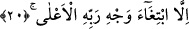

20. Rabbinin rızasını istemek başka
Bu cümle önceki âyetten “nimet/iyilik” kelimesinden munkatı‘ istisnâdır.[120] Çünkü
Rabbinin rızasını istemek, karşılığı verilen nimet/iyilik cinsinden değildir.
Âyetin mânâsı ise şöyledir: Fakat o bunu Rabbi’nin rızasını elde etmek için yapmıştır.
Yani O’nun zâtını istemek ve rızasını talep etmek için yapmıştır. Daha önceki bir
nimete/iyiliğe karşılık olarak verilen mal bir borcu ödemek kabilindendir. Onun için
onun fazladan bir sevab hak etmekte etkisi yoktur. Sevâba müstehak olan, yaptığı fiili
Allah emrettiği ve teşvik ettiği için yapan kimsedir.
“A’lâ” kahr ve galebe ile mahlûkatının üstünde ve yüce demektir. Nitekim Ebü’l-Leys
kelimeyi bu şekilde açıklamıştır.
Kâşânî der ki: “Allah’ın bütün sıfatlarıyla birlikte var olan zâtı anlamına gelen
“vech/yüz” “a’lâ/en yüce” olarak vasfedilmiştir. Çünkü Allah Teâlâ’nın her isme uygun
bir vechi vardır. Bu ismi hâl diliyle isteyip duâ eden ve istîdadına göre ona ibâdet
edene o vechi ile tecellî eder. el-Vechü’l-a‘lâ Allah Teâlâ’nın bütün isimlerine şâmil
olan ism-i a‘lâsına/en yüce ismine göre tecelli eden vechidir. Eğer “A’lâ” kelimesini
rabb kelimesinin vasfı yaparsan bu takdirde Rabb o isim olmuş olur.”
Bu âyet Ebû Bekir Sıddîk hakkında nâzil olmuştur. O Bilal (r.a.)’ı, Âmir b. Füheyre
ve kardeşi, Ubeyd, Zinnîre -Rum asıllı bir câriye idi-, onun kızı Ümmü Umeys,
Muemmeloğulları’nın câriyesi, Nehdiyye ve kızı gibi kölelerden bir topluluğu satın
almıştı. Zinnîrenin gözleri zayıflamıştı. Müşrikler Lât ve Uzzâ onun gözünü görmez hale
getirdiğini söylediler. Bu iki putun dinine muhâlefet edince Allah ona gözlerini geri
verdi. Müşrikler bu köle ve câriyelere İslâm’dan dönmeleri için işkence yapıyorlardı.
Hz. Ebû Bekir (r.a.) onları satın alıp âzâd etti. Bu nedenle âlimler, sûrede geçen “en
kötü/bedbaht kimse” ile Ebû Cehil’in veya Ümeyye b. Halef’in kasdedildiğini
söylemişlerdir.
Keşfü’l-esrâr’da gelmiştir ki bu sûre iki kişi hakkındadır. Birisi etkà/ sıddıkların
rehberi, yâni Ebû Bekir (r.a.)’tır. Birisi de eşkà ki dalâlet ehli zındıkların önderi, yâni
Ebû Cehil’dir. Bu sûrenin girişindeki gece ve gündüze kasem edilmesiyle birinin
karanlığına, diğerinin aydınlığına işâret edilmektedir. Yani dalâlet gecesinde hiç kimse
şakî Ebû Cehil kadar yolunu kaybetmemiştir. Davet gündüzünde ise hidâyet nûru hiç
kimsede müttakî Hz. Ebûbekir’deki gibi açığa çıkmamıştır.
Aydınlık gönüllerin başı en büyük Sıddık, Ebûbekir’dir.
Bütün âlem onun sıdkını tasdik etmiştir.
Din günü onun güneşiyle aydınlanmıştır
Yakîn ehline âşinâlık onunla olmuştur.
Rivâyet edilmiştir ki Ümeyye b. Halef, kölesi Bilal Habeşî (r.a.)’e dininden dönmesi